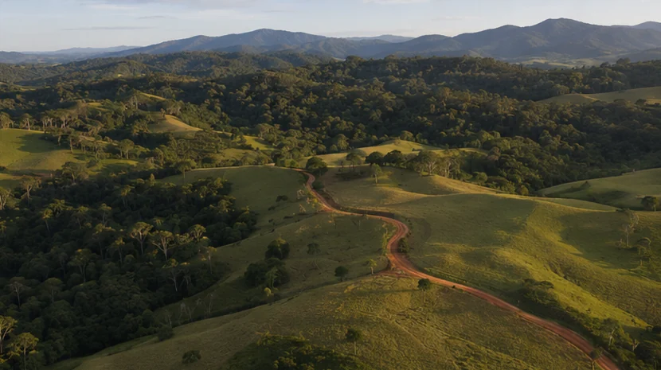
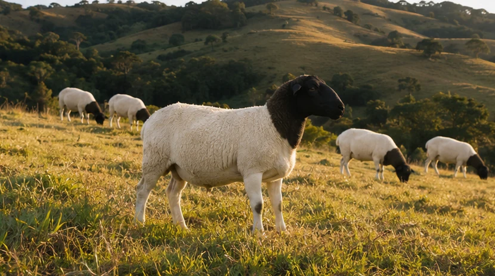

AgronegócioDo campo à COP30
Maressa Vilela

José Vitor · Médico-veterinário
Na estreia do podcast, José Vitor compartilha sua experiência na produção de peixes no Panamá e na Costa Rica e fala sobre oportunidades de trabalho na piscicultura.

AgronegócioMaressa Vilela
 Na Estrada
Na Estrada
Daniel Marcondes

Na EstradaNatanael Pereira